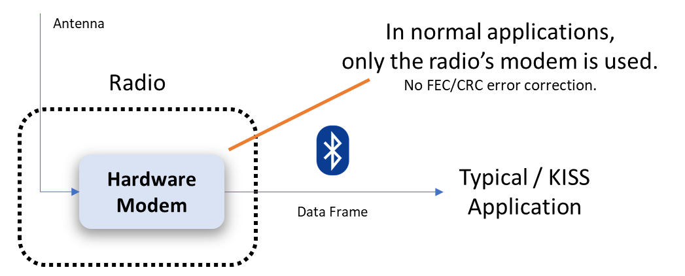
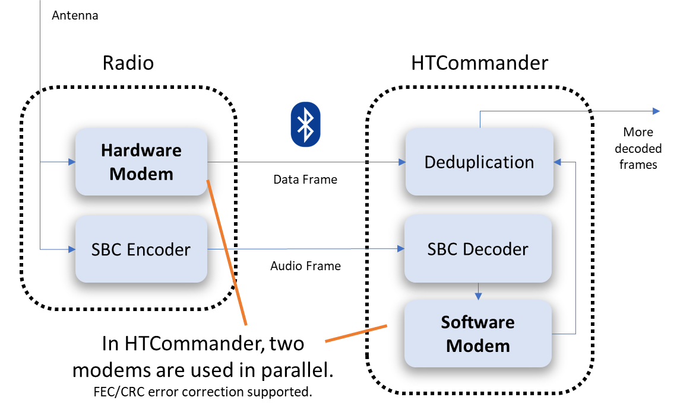
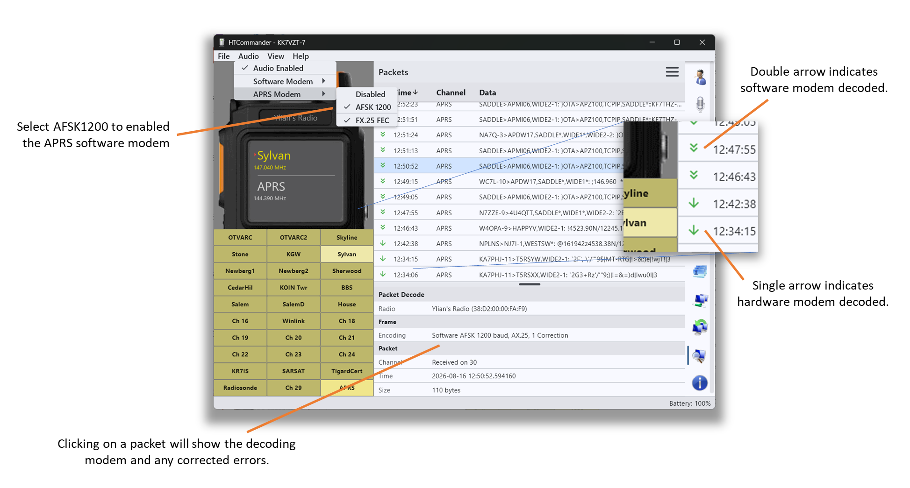

The problem: the radio's TNC drops packets
Most APRS apps talk to a handheld the same way: over KISS. The radio's built-in hardware modem (its TNC) listens to the air, decodes every AX.25 packet it can, and hands the finished data frames to the app over Bluetooth. The app never touches the raw audio — it only ever sees the packets the radio already decoded.

That works, but the radio's TNC is a modest modem — and for good reason: it runs on a handheld's limited compute. It has two real limitations:
- No forward error correction. It doesn't understand FX.25, so a packet sent with FEC is decoded as if the FEC bytes were just noise — and if the payload took a hit, it's gone.
- No CRC error recovery. AX.25 frames carry a CRC. The radio's TNC treats it as pass/fail: if a single bit is wrong, the CRC fails and the whole packet is discarded. It never tries to work out which bit flipped and put it back.
On top of that, a small hardware modem simply misses packets — weak signals, timing edges, a bit of fading — and every miss is a position report or message you never see. Over an afternoon of listening, the lost-packet count adds up fast.
This isn't a bug in the radio. It's easy to look at the dropped packets and conclude the radio's modem is broken, but that's not what's going on. A handheld simply doesn't have the processing power or memory to throw at the AX.25/APRS problem that a mobile or desktop device does, and there's no reason to expect that to change. The heavy lifting that recovers marginal packets — FX.25 forward error correction, or brute-forcing a failed CRC by flipping bits until the frame checks out — is a big compute ask on both the send and receive side, and that's a lot to demand of a small radio. In reality the radio decodes AFSK 1200 packets just fine within its capacity; expecting a Direwolf-class modem to run inside a handheld would not be a fair ask. The point of the software modem isn't to fix the radio — it's to let a device that does have the compute pick up the packets the radio couldn't.
The idea: decode the same signal twice
The radio is already sending HTCommander something the KISS world ignores: the audio. When you enable the audio channel, the radio streams the received audio to the app over Bluetooth (compressed with SBC). HTCommander was built to run its own software modem on that audio stream — the same DSP pipeline it uses for DART and PSK — and it can run a full AFSK 1200 APRS demodulator there too.
So the same over-the-air signal gets decoded twice, in parallel:

- The hardware modem in the radio decodes the packet and sends the finished data frame over Bluetooth, exactly as before.
- The software modem in HTCommander decodes the SBC audio stream itself — and because it's a real software modem, it can do the two things the radio can't: FX.25 forward error correction and CRC-based single/multi-bit recovery.
The hardware modem is almost always faster — it's decoding in real time on dedicated silicon — so when it succeeds, its packet arrives first and wins. But when the radio's TNC comes up empty (no FEC, a failed CRC, or a missed packet entirely), the software modem gets its shot at the same audio and often pulls the packet out anyway.
Making the two agree: deduplication
Running two decoders on one signal means the same packet can be decoded twice — once by each modem. HTCommander wraps both sources behind a small deduplicator so you never see doubles. It keys each finished frame by its raw bytes and suppresses any identical frame seen again inside a short window (a few seconds); the first copy through wins and the rest are dropped. Because the hardware modem is faster, it usually gets there first — and only the packets it couldn't decode fall through to be filled in by the software modem.
The net effect: you get the union of what both modems can hear, with none of the duplicates.
Turning it on
Two settings enable the feature. Both live under the Audio menu:
- Audio Enabled — the software modem needs the audio stream. Enabling audio is enough; the channel does not have to be un-muted. Even when the channel is marked muted, HTCommander still receives the audio data (it just doesn't play it out your speakers), which is exactly what the modem needs.
- APRS Modem → AFSK 1200 — this switches on the software APRS demodulator. Leave FX.25 FEC enabled too, so the software modem can use forward error correction on packets that carry it.

That's it. From now on both modems are running, and the deduplicator quietly merges their output.
Seeing it work: the Packets tab
The proof is in the Packets tab, and it's designed so you can tell the two modems apart at a glance:
- A single arrow next to a packet means the hardware modem decoded it — the radio's TNC got there first.
- A double arrow means the software modem decoded it — a packet you would not have seen with a KISS app.
Click any packet to open its decode details. The Encoding line tells you
which modem handled it and how much repair it took — for example
Software AFSK 1200 baud, AX.25, 1 Correction means the software modem decoded
it and had to flip one bit to make the CRC check out. If FX.25 forward error
correction was in play, you'll see that too, along with how many symbols it
recovered.
Leave the feature running for a while, then scan the Packets tab and count the double arrows. Every one of them is a packet the radio's own modem missed or rejected — a position, a message, or a beacon you'd have lost with a normal setup. In practice it's a surprising number, and it costs you nothing but a setting: a real boost in how much your radio actually hears.